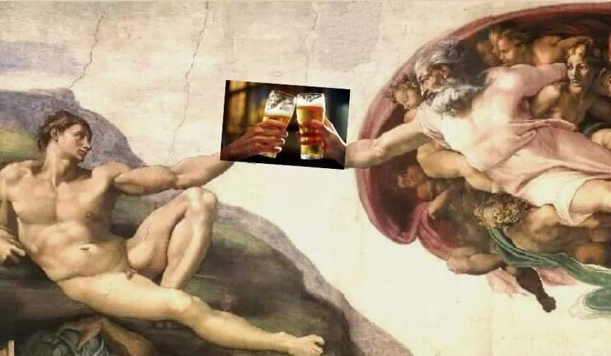
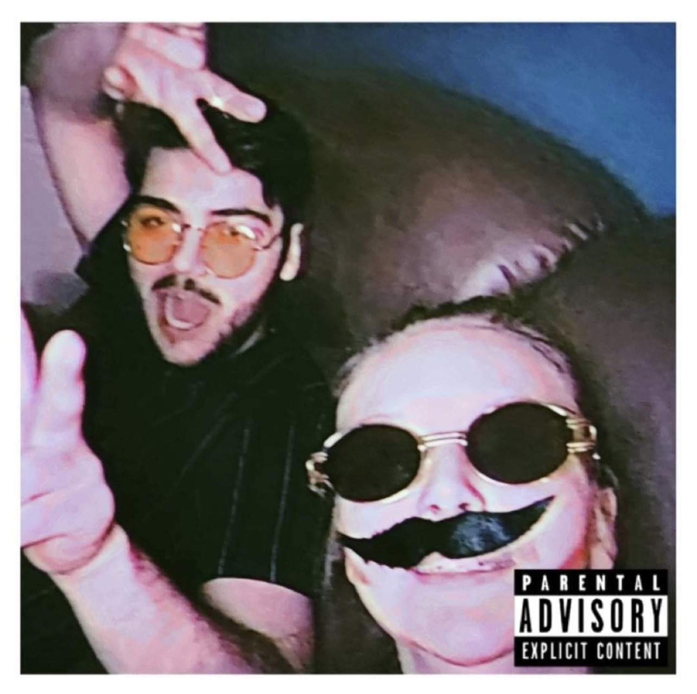
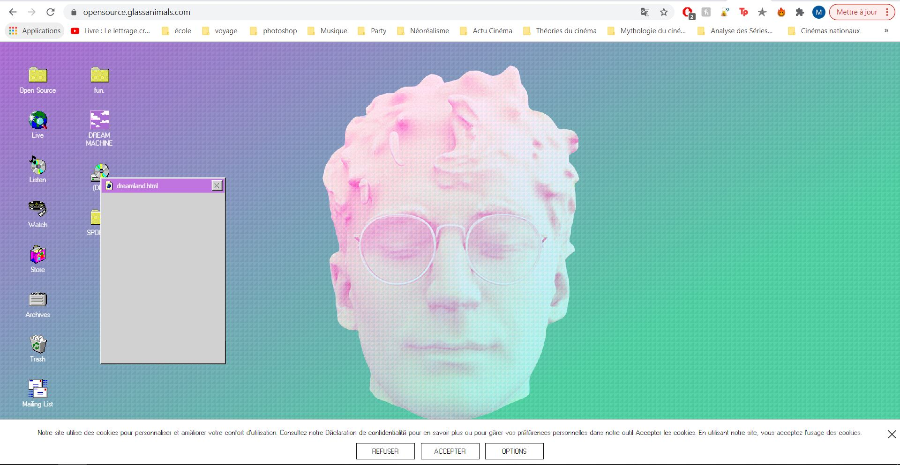

Mélaine Rousselin-Jaboulay

Bonjour et bienvenue sur ma page Web! Mon nom est Mélaine Rousselin-Jaboulay (j'ai comme un flashback de MySpace en écrivant). Actuellement étudiante au D.E.S.S Art, créations et téchnologie, j'ai également fini mon bac en Cinéma à l'Université de Montréal en Avril dernier.
J'ai eu quelques cours depuis Septembre en programmation, notamment en Lua (pour love2d) ainsi que C# pour Unity. Je pratique la photographie ainsi que la vidéo, et je cherche constamment des moyens pour m'améliorer dans ces domaines, notamment en maîtrisant petit à petit
la suite Adobe, avec toute la suite de logiciels proposés. Grande fan d'argentiques, je les collectionnes.
En Art, j'affectionne particulièrement ce qui se pratique avec des technologies. Que ce soit la VR, l'AR, les multiprojections, etc... Et j'apprécie déjà apprendre la construction d'une page web. Je m'intéresse également
fortement au Design Graphique.
En dehors de mes intérêts pour les Arts Technologiques, je suis scout mais je pratique aussi différents sports au fil des saisons : ski, snowboard et patins l'hiver, vélo de route, randonnée et plongée sous marine l'été.
Le site officiel du groupe Glass Animals
Le groupe Glass Animals est un groupe de musique pop-psychédélique formé à Oxford en Angleterre en 2010. (Source :
wikipedia.org )
Leur dernier album, nommé "Dreamland", sorti en 2020, reprend l'esthétique de la Vaporwave.
Selon Wikipédia, la Vaporwave, est "un genre musical et artistique ayant emérgé" [au début des] "années 2010", influencé par la musique et les films des années 80.
"La vaporwave est caractérisée par sa nostalgie et sa fascination pour la culture rétro, la technologie, et les pubs des années 1980 et 1990."(Contributeurs Wikipedia. (2021, Fevrier 5). Vaporwave. Wikipedia.
wikipedia.org)
"Bien que son attitude et son message soient divergents et ambigus, la vaporwave sert à la fois de critique et de parodie de la société de consommation, du système
capitaliste, de la propagande, de la culture yuppie des années 1980, et de la musique new age." (Contributeurs Wikipedia. (2021, Fevrier 5). Vaporwave. Wikipedia.
wikipedia.org). Ainsi, leur site officiel
glassanimals.com/ est complétement construit dans la lignée de leur nouvel album et de cette
esthétique, en reprenant les interfaces d'ordinateurs des années 80-90.
Ce qui me fascine le plus dans leur site, est l'attention ainsi que la précision accordée aux détails pour une immersion totale et complète du spectateur.
En tant que fandu groupe, ou simple visiteur du site, nous avons un certain plaisir à pouvoir visiter le site. Cliquer sur chaque petite icône nous permets d'en découvrir plus
sur l'esthétique du groupe et ainsi avoir l'impression de participer sur un niveau personnel à leur univers.
